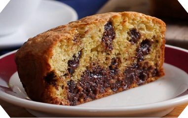
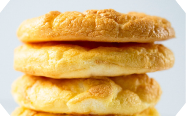

Chocolate Chip
Banana Bread
Banana Bread
Ingredients
for 2 servings
1 banana
YOGURT COATING
3 cups greek yogurt (855 g)
⅓ cup almond milk (80 mL)
TOPPINGS
mini chocolate chip
Preparation
1. Cut the bananas in half horizontally.
2. Insert popsicle sticks in the middle of the banana halves.
Transfer bananas to a parchment paper-lined baking sheet,
and freeze until solid.
3. In a tall glass or mixing cup, add Greek yogurt and almond
milk, and mix together. If the texture is too thick, add more
almond milk until the coating is silky.
4. Place chocolate chips onto a plate. Dip the bananas
into the yogurt coating, then roll or sprinkle on toppings.
5. Place bananas in freezer until the coating has hardened.
6. Enjoy!

Hazelnut
Brownies
Brownies

Palmier
Cookies
Cookies

Cloud
Bread
Bread